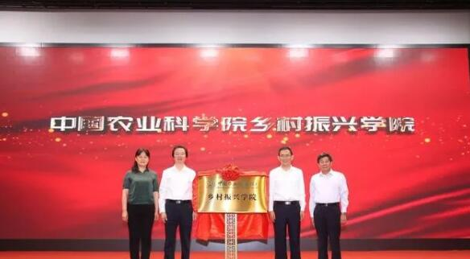

中国农业科学院乡村振兴学院揭牌

中国农业科学院院长唐华俊介绍，在全面推进乡村振兴战略的历史机遇期，中国农业科学院作为国家战略科技力量，自2018年下半年起，启动组建“中国农业科学院乡村振兴学院”的工作，为“一农”向“三农”转变提供科技支撑的重要举措。
据介绍，乡村振兴学院组建以来，按照“边筹备、边教学、边科研、边出成果”的方针，组建了8个教研组和16名科研师资队伍，在全国率先开设了《乡村振兴理论与实践》研究生必修课，约2000多名博士硕士研究生修了该门课程；先后在河南兰考、福建南平和山西吕梁等地开展乡村干部和科技人员培训，累计培训科技扶贫与乡村振兴等方面人员3000多人；初步构建了以“农经观察”为载体的乡村振兴学术体系，以乡村振兴战略“二十字总要求”为主要授课内容的乡村振兴教学体系，以农业农村现代化为主攻方向的科研体系，以传播普及国家乡村振兴战略为内容的培训体系，以中国农业科学院乡村振兴示范县为载体的乡村振兴试验示范体系，以及以“田间课堂”为载体的技术服务体系等乡村振兴学院的五大体系。
唐华俊院长强调，中国瞄准乡村振兴战略需求和农业农村发展实际，举全院之力，坚持高起点、大平台、强联合、重开放的建院方针，全面统筹中国农科院相关研究所和创新团队优势资源，联合国内涉农高等院校和科研机构，以及乡村实验和推广基地，加快健全乡村振兴学院五大体系，探索体制机制与管理创新。
中国农科院乡村振兴学院将组建基础教育部、专业培训部和战略研究部三大业务机构，设置“乡村振兴理论”“产业发展”“生态环境”“乡村文化”“乡村治理”“社会保障”“乡村规划”“经营制度”等8个专业教研组，强化理论研究与智库服务，大力培养乡村振兴人才。
到2025年，学院将构建较为完善的乡村振兴教育体系和科研体系，健全运行机制，产出一批成果，形成较大的学术影响力，到2035年，建成国内一流国际有影响的乡村振兴战略理论研究机构和人才培养基地，培育一批乡村振兴战略理论研究的领军人才，为乡村振兴战略提供重要的理论创新和政策创设支撑，输送一大批高层次的乡村振兴一线管理人才。到2050年，中国农业科学院乡村振兴学院乡村振兴学科实力和科研教学水平进入世界前列，成为国际知名乡村发展领域的智库力量。


 意见反馈
意见反馈